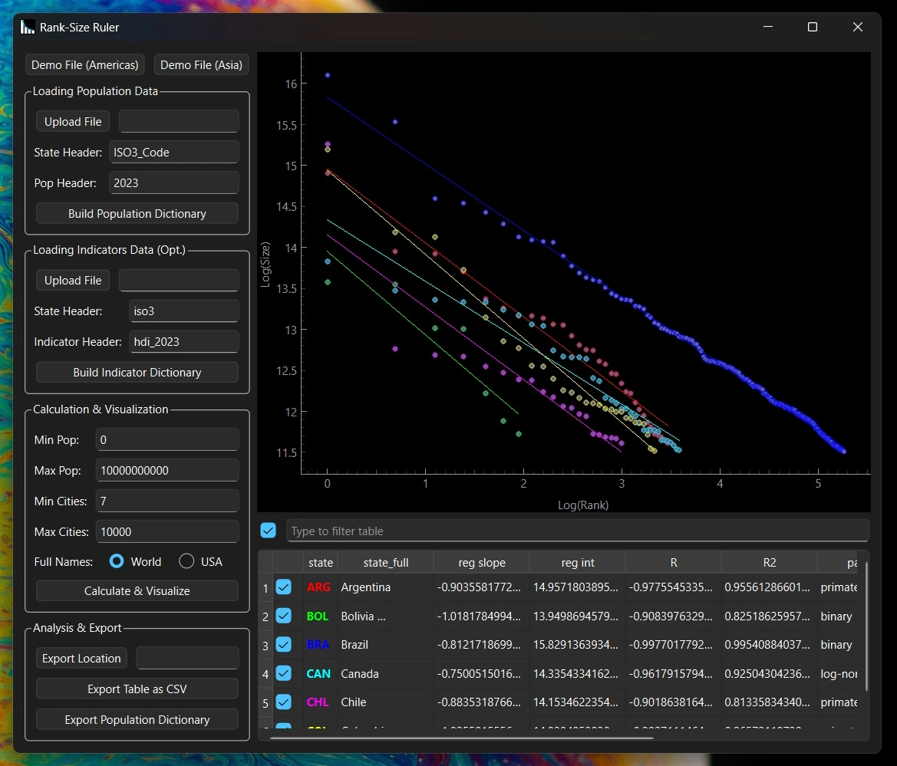

A screenshot of the Rank-Size Ruler with sample data from the Americas.
This project is available on GitHub.
Background
American linguist George Zipf observed that the frequency of many things is inversely proportional to its rank in frequency, from words in texts to incomes in countries. In the case of cities, Zipf’s Law is known as the Rank-Size rule, where the n-th largest city in a country tends to have a population of 1/n-th of the largest city—the 2nd-largest city is 1/2 the size of the largest city, the 3rd-largest city is 1/3, and so on. In the case of cities within a country, Zipf’s Law is known as the Rank-Size Rule.
Charting this ideal distribution on logarithmic axes yields a straight line, or a log-normal distribution. Cities may instead yield a primate distribution, where the largest city is more than twice as large as the next-largest, or a binary distribution, where the largest two cities are close in population and disproportionately large.
The Rank-Size distribution is generally said to result from an urban hierarchy which indicates fairer distribution of a country’s resources. The US, for example, is a typical example of a country which follows the rule, indicating a developed and equitable economy. Other countries—such as Thailand, with its primate city Bangkok, do not adhere as closely, indicating a poorer country with resources concentrated in one dominant city.
Ever since learning of the rule in high school AP Human Geography class, I wondered if the Rank-Size rule could be empirically and systematically observed, both for the tendency in general and its association with certain indicators. This year, I gained the Python knowledge necessary to actually test it as part of my Semester Assignment; the Rank-Size Ruler is a continuation of this research.
Development
The Rank-Size Ruler takes in a .csv, essentially a data table, reading from each row each city’s population and country. Then, a dictionary is built, with each country associated with a list of populations for each city in that country.Next, the data for each country is charted with a scatter plot and trendline, with the logarithm of each city’s rank on the horizontal axis and the logarithm of each city’s size on the vertical axis. (The minimum and maximum population and number of the cities counted can be adjusted, which is important for especially large datasets.)
The table features checkboxes to toggle the visibility of each country’s respective scatter plot and trendline, a main checkbox to toggle the visibility of all visible countries, and a search bar to filter data from all columns.
The columns display each country’s name, the slope and intercept of the trendline, the Pearson’s R and R squared (for a linear regression), the country’s distribution pattern (as mentioned, log-normal, primate, and binary), and optional indicators. The data for the indicators is loaded in just like that for the cities, and can be used to compare rank-size data to indicators of, say, human development or income inequality. The table, as well as the population dictionary, can be exported in .csv and .json respectively.
Findings & Significance
Using the Rank-Size Ruler with UN datasets, the Rank-Size Rule appears to largely hold true, even for countries with more primary or binary patterns. However, little correlation was found between UN indicators of human development and both the adherence to the Rule and the pattern. This may warrant further investigation aided by the Rank-Size Ruler’s systematic and versatile functionality. Outside of research, the Rank-Size Ruler is helpful for easily displaying and teaching the Rank-Size Rule, spreading understanding of this phenomenon to all.
To see the Rank-Size Ruler for yourself, visit the GitHub repo. To continue following my work, see more from this page.